🍳 Yubin Kitchen – Resep Nusantara & Dunia

Nasi Goreng
Bahan:
- 2 piring nasi putih
- 1 butir telur
- 2 siung bawang putih
- 1 sdm kecap manis
- 1 sdt garam
- 1 sdm minyak goreng
- 50 gram ayam suwir
Langkah:
- Panaskan minyak di wajan.
- Tumis bawang putih hingga harum.
- Masukkan telur lalu orak-arik.
- Tambahkan ayam suwir.
- Masukkan nasi putih.
- Tambahkan kecap manis dan garam.
- Aduk hingga rata dan matang.

Sate Ayam
Bahan:
- 300 gram daging ayam
- 2 sdm kecap manis
- 1 siung bawang putih
- 1 sdt garam
- 1 sdm minyak
- 100 gram kacang tanah
Langkah:
- Potong ayam kecil-kecil.
- Tusuk dengan tusuk sate.
- Haluskan kacang tanah untuk saus.
- Bakar sate di atas arang.
- Olesi kecap manis saat dibakar.
- Sajikan dengan saus kacang.

Gado-Gado
Bahan:
- 100 gram kangkung
- 100 gram tauge
- 1 buah telur rebus
- 2 potong tahu goreng
- 2 potong tempe goreng
- 150 gram kacang tanah
- 1 sdm gula merah
Langkah:
- Rebus kangkung dan tauge.
- Goreng tahu dan tempe.
- Haluskan kacang tanah dan gula merah.
- Tambahkan sedikit air untuk saus.
- Susun sayuran di piring.
- Siram dengan saus kacang.

Rendang
Bahan:
- 500 gram daging sapi
- 400 ml santan
- 3 siung bawang putih
- 5 cabai merah
- 1 ruas lengkuas
- 2 lembar daun jeruk
- 1 sdt garam
Langkah:
- Haluskan bawang dan cabai.
- Tumis bumbu hingga harum.
- Masukkan santan.
- Tambahkan daging sapi.
- Masak dengan api kecil.
- Aduk sampai kuah mengental.

Soto Ayam
Bahan:
- 300 gram ayam
- 1 liter air
- 2 siung bawang putih
- 1 sdt kunyit
- 1 sdt garam
- 50 gram bihun
Langkah:
- Rebus ayam hingga matang.
- Haluskan bawang dan kunyit.
- Tumis bumbu hingga harum.
- Masukkan ke dalam kuah ayam.
- Tambahkan bihun dan ayam suwir.
- Sajikan hangat.

Martabak Manis
Bahan:
- 200 gram tepung terigu
- 1 sdm gula
- 1 butir telur
- 300 ml air
- 1 sdt baking powder
- Mentega secukupnya
- Coklat dan keju topping
Langkah:
- Campur tepung, gula, dan air.
- Tambahkan telur dan baking powder.
- Aduk hingga adonan halus.
- Tuang ke wajan datar.
- Masak hingga muncul lubang.
- Tambahkan topping dan lipat.
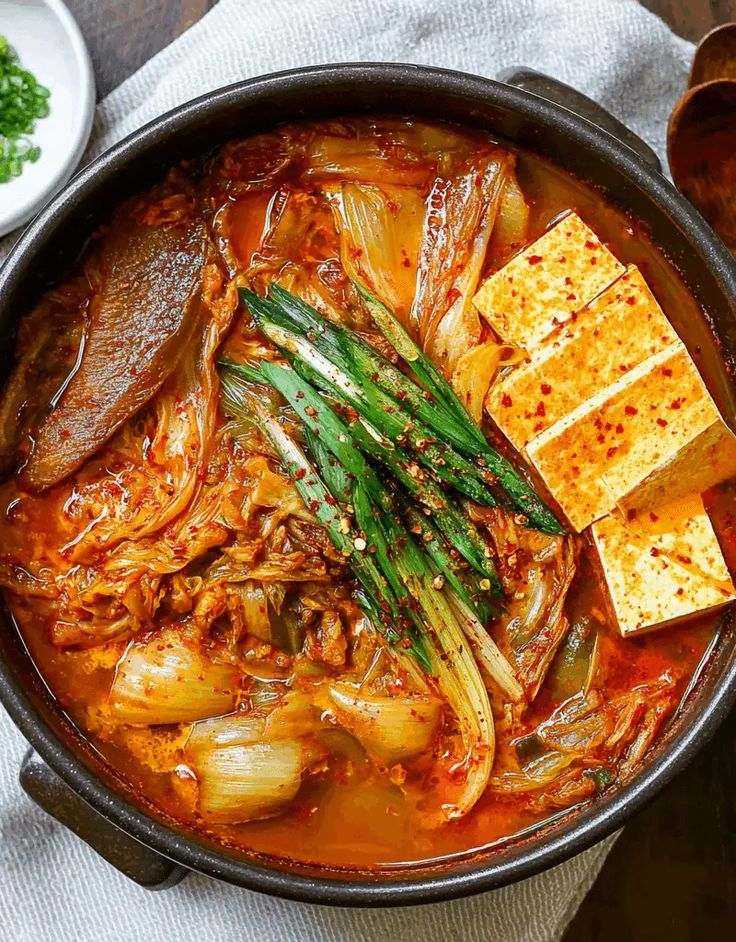
Kimchi Jjigae
Bahan:
- 200 gram kimchi
- 100 gram pork belly
- 1 sdm gochujang
- 1 sdt minyak wijen
- 2 siung bawang putih
- 300 ml air
- 1 tahu sutra
Langkah:
- Tumis pork belly hingga keluar minyak.
- Masukkan kimchi dan bawang putih.
- Tambahkan gochujang dan air.
- Rebus 15 menit.
- Masukkan tahu potong.
- Sajikan dengan minyak wijen.
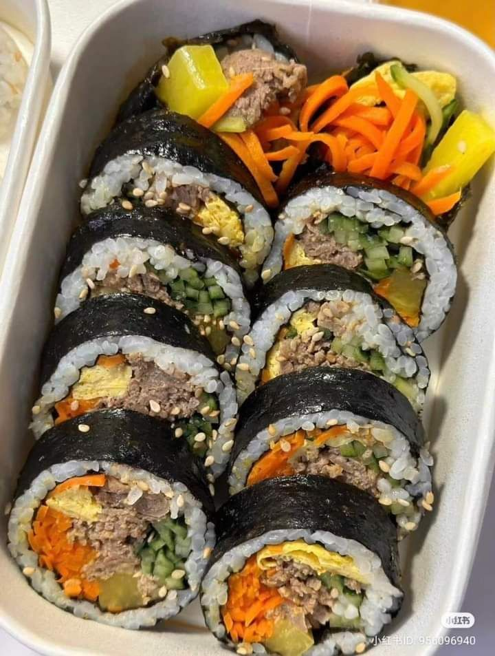
Bibimbap
Bahan:
- 1 mangkok nasi
- 50 gram wortel
- 50 gram bayam
- 1 butir telur
- 2 sdm gochujang
- 1 sdt minyak wijen
- 50 gram daging sapi
Langkah:
- Rebus bayam dan wortel.
- Tumis daging sapi.
- Siapkan nasi di mangkok.
- Tata sayur dan daging di atas nasi.
- Tambahkan telur ceplok.
- Beri gochujang dan minyak wijen, aduk rata.
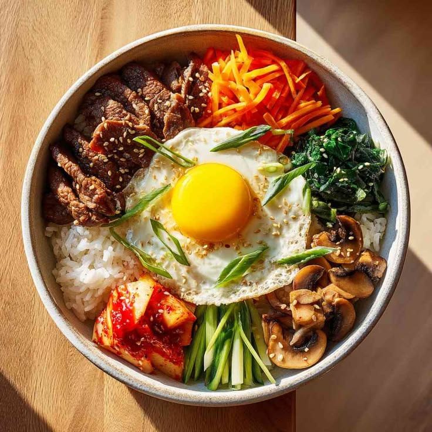
Kimbap
Bahan:
- 2 lembar nori
- 1 mangkok nasi
- 50 gram wortel
- 50 gram bayam
- 2 batang crabstick
- 1 butir telur
- 1 sdt minyak wijen
Langkah:
- Gulung nasi di atas nori.
- Letakkan wortel, bayam, telur, crabstick.
- Gulung sambil ditekan.
- Olesi minyak wijen.
- Potong sesuai selera.
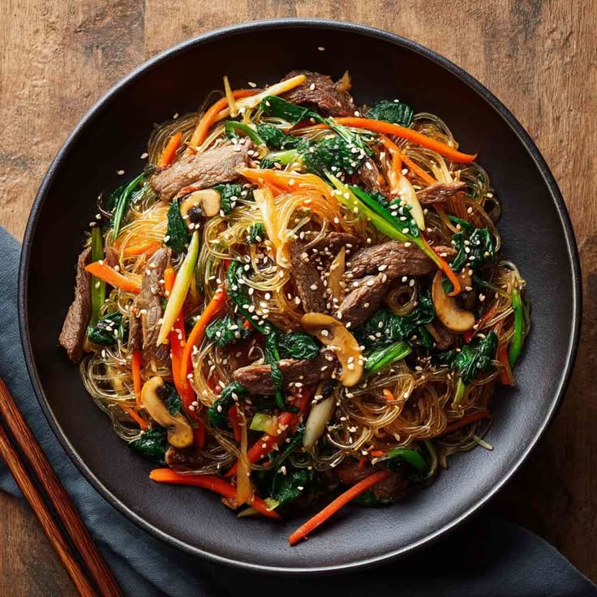
Japchae
Bahan:
- 100 gram soun korea
- 50 gram wortel
- 50 gram bayam
- 50 gram daging sapi
- 2 sdm kecap asin
- 1 sdt minyak wijen
- 1 sdm gula
Langkah:
- Rebus soun, tiriskan.
- Tumis daging dan sayur.
- Campur soun dengan tumisan.
- Tambahkan kecap asin, gula, minyak wijen.
- Aduk rata, sajikan hangat.
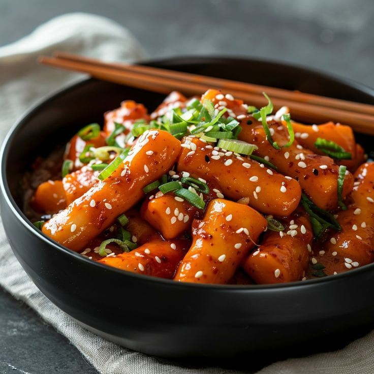
Tteokbokki
Bahan:
- 200 gram tteok (kue beras)
- 2 sdm gochujang
- 1 sdm gula
- 2 lembar fish cake
- 1 batang daun bawang
- 300 ml air
Langkah:
- Campur gochujang, gula, air di wajan.
- Masak hingga mendidih.
- Masukkan tteok dan fish cake.
- Aduk hingga saus mengental.
- Tabur daun bawang, sajikan.
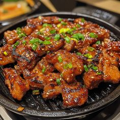
Samgyeopsal
Bahan:
- 300 gram pork belly
- Selada dan daun perilla
- Bawang putih cincang
- Gochujang untuk cocol
- Minyak wijen
Langkah:
- Panggang pork belly di wajan tanpa minyak.
- Balik hingga kecoklatan.
- Potong kecil-kecil.
- Sajikan dengan selada, bawang putih, gochujang.
- Bungkus dan makan.
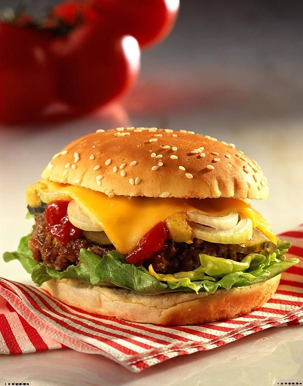
Burger
Bahan:
- 1 roti burger
- 150 gram daging sapi giling
- 1 lembar keju
- Selada, tomat, bawang bombay
- Saus tomat & mustard
- Garam & merica
Langkah:
- Bentuk daging menjadi patty.
- Panggang patty hingga matang.
- Panggang roti sebentar.
- Tata selada, patty, keju, tomat, bawang.
- Tambahkan saus, tutup roti.
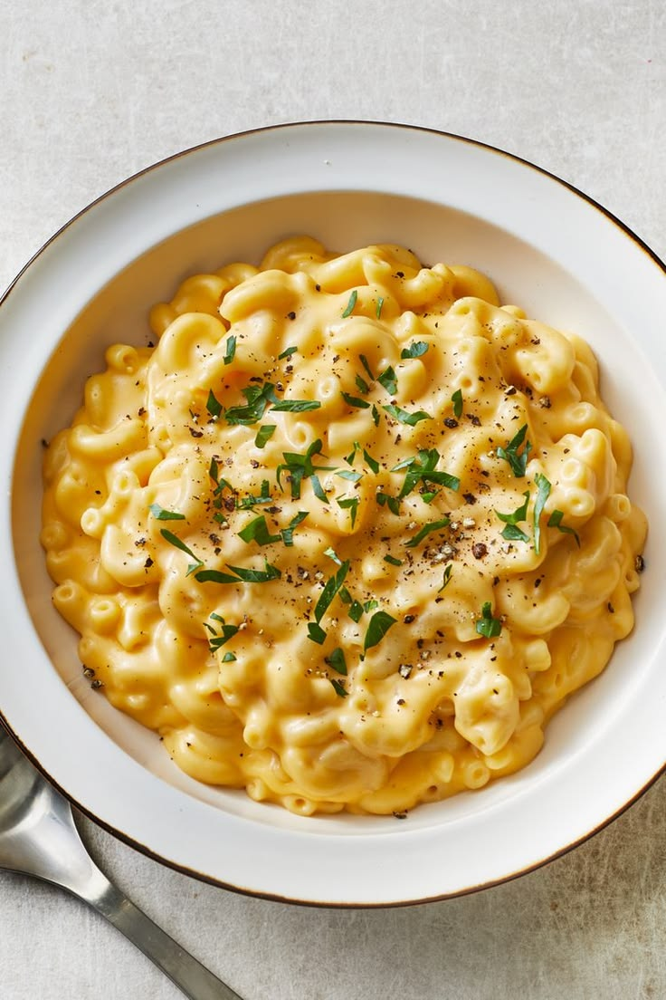
Mac and Cheese
Bahan:
- 200 gram makaroni
- 2 sdm mentega
- 2 sdm tepung
- 300 ml susu
- 150 gram cheddar parut
- Garam & merica
Langkah:
- Rebus makaroni hingga al dente.
- Buat saus: lelehkan mentega, masukkan tepung, aduk.
- Tuang susu perlahan sambil diaduk.
- Masukkan keju, aduk hingga meleleh.
- Campur dengan makaroni, sajikan hangat.
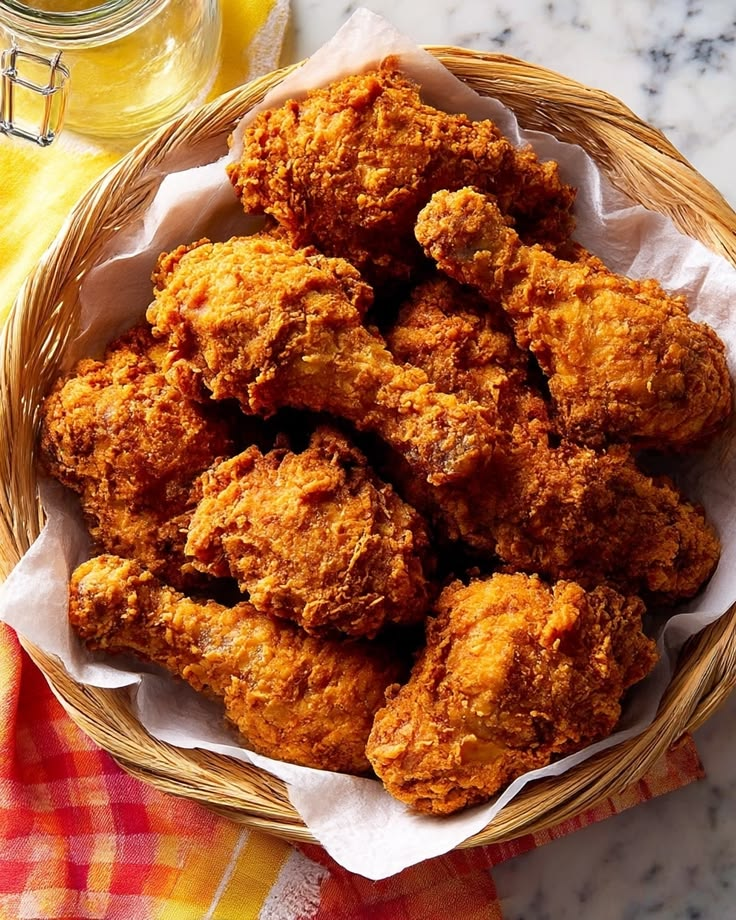
Fried Chicken
Bahan:
- 4 potong ayam
- 200 ml buttermilk
- 150 gram tepung terigu
- 1 sdt paprika bubuk
- 1 sdt bawang putih bubuk
- Garam & merica
- Minyak untuk menggoreng
Langkah:
- Rendam ayam di buttermilk 1 jam.
- Campur tepung dan bumbu.
- Lumuri ayam dengan tepung.
- Goreng dalam minyak panas hingga matang.
- Tiriskan, sajikan.

Pancake
Bahan:
- 150 gram tepung terigu
- 2 sdm gula
- 1 sdt baking powder
- 1 butir telur
- 200 ml susu
- 2 sdm mentega leleh
- Sirup maple
Langkah:
- Campur tepung, gula, baking powder.
- Di wadah lain kocok telur, susu, mentega.
- Gabungkan, aduk rata.
- Tuang ke wajan datar, masak hingga bersarang.
- Balik, masak sebentar.
- Sajikan dengan sirup maple.
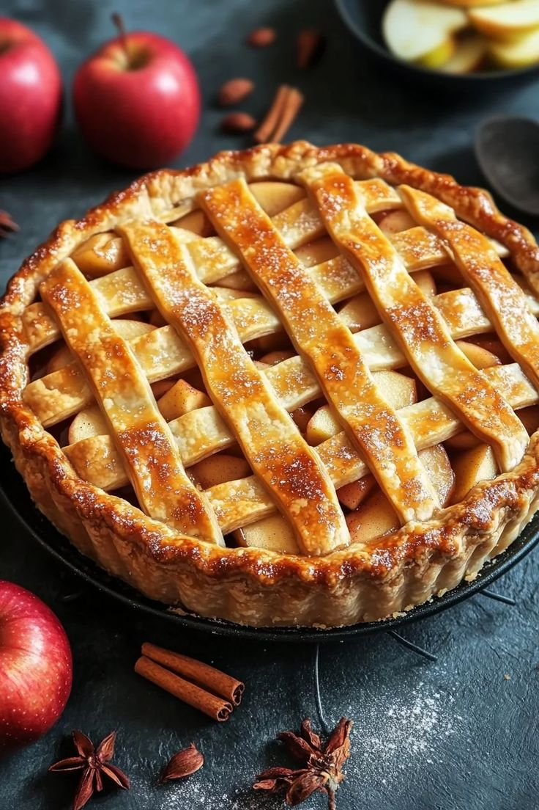
Apple Pie
Bahan:
- 2 buah apel hijau
- 100 gram gula
- 1 sdt kayu manis
- 1 sdm air lemon
- 1 lembar puff pastry
- 1 butir telur (olesan)
Langkah:
- Potong apel tipis, campur gula, kayu manis, lemon.
- Letakkan apel di atas puff pastry.
- Tutup dengan pastry lagi, tekan pinggir.
- Oles telur, panggang 200°C 25 menit.
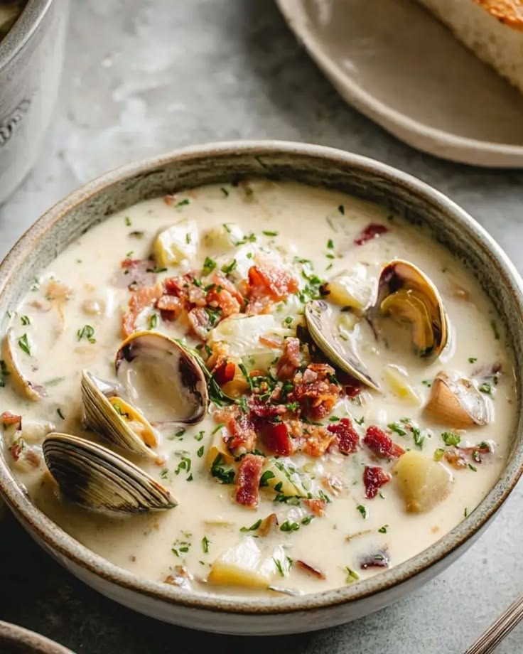
Clam Chowder
Bahan:
- 200 gram kerang kaleng
- 2 buah kentang potong dadu
- 50 gram bawang bombay
- 2 sdm mentega
- 300 ml susu
- 100 ml krim kental
- Garam & merica
Langkah:
- Tumis bawang dengan mentega.
- Masukkan kentang, tumis sebentar.
- Tuang susu dan krim, masak hingga kentang lunak.
- Tambahkan kerang, garam, merica.
- Sajikan hangat.
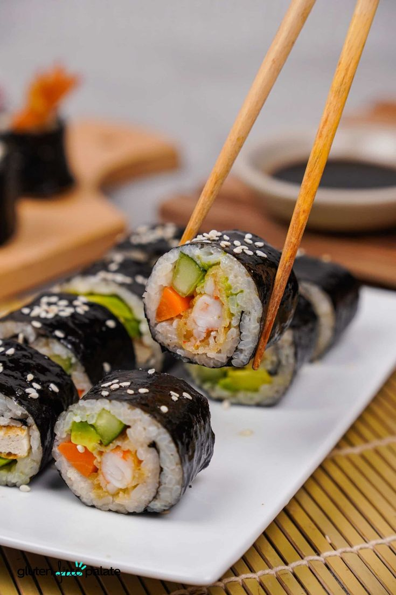
Sushi Roll
Bahan:
- 2 lembar nori
- 1 mangkok nasi sushi
- 100 gram salmon segar
- 1 buah mentimun
- 1 buah alpukat
- Kecap asin & wasabi
Langkah:
- Letakkan nori di atas matras bambu.
- Ratakan nasi di atas nori.
- Letakkan salmon, mentimun, alpukat.
- Gulung sambil ditekan.
- Potong-potong, sajikan dengan kecap dan wasabi.

Ramen
Bahan:
- 1 bungkus mie ramen
- 500 ml kaldu ayam
- 1 sdm miso
- 1 butir telur rebus
- 2 lembar nori
- 50 gram chashu (pork)
- Daun bawang
Langkah:
- Rebus mie hingga matang, tiriskan.
- Panaskan kaldu, larutkan miso.
- Masukkan mie ke mangkok, tuang kaldu.
- Beri topping telur, chashu, nori, daun bawang.

Tempura
Bahan:
- 100 gram udang
- 50 gram sayuran (paprika, terong)
- 100 gram tepung terigu
- 1 butir telur
- 150 ml air es
- Minyak untuk menggoreng
Langkah:
- Campur tepung, telur, air es (jangan overmix).
- Celupkan udang dan sayur ke adonan.
- Goreng dalam minyak panas hingga renyah.
- Tiriskan, sajikan dengan saus tentsuyu.
Okonomiyaki
Bahan:
- 100 gram tepung terigu
- 100 ml air
- 1 butir telur
- 50 gram kol iris
- 50 gram daging sapi iris
- Saus okonomiyaki & mayones
- Bonito flakes
Langkah:
- Campur tepung, air, telur, kol, daging.
- Tuang ke wajan datar, bentuk bulat.
- Masak hingga kedua sisi matang.
- Oles saus okonomiyaki dan mayones.
- Tabur bonito flakes.
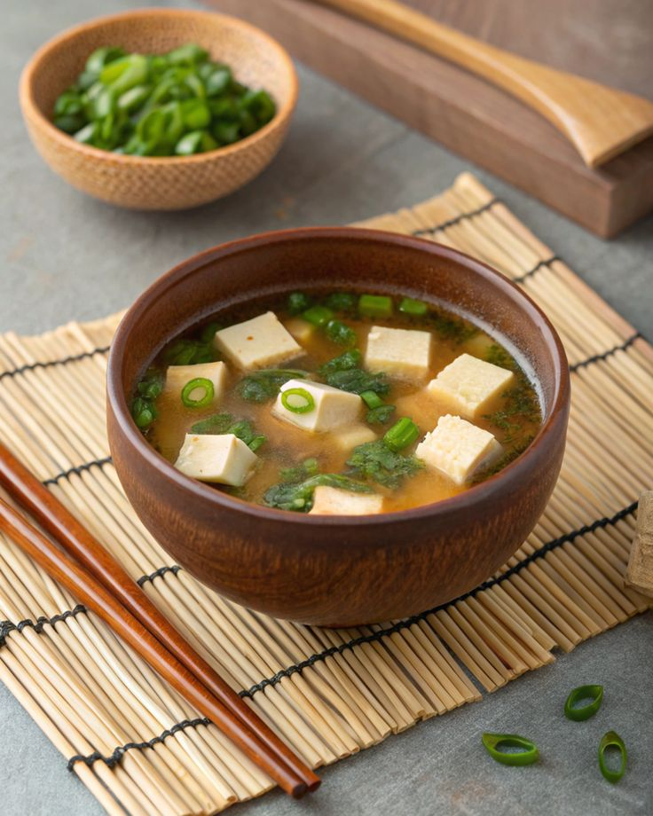
Miso Soup
Bahan:
- 500 ml kaldu dashi
- 2 sdm miso paste
- 50 gram tahu sutra
- 1 batang daun bawang
- 1 lembar wakame (rumput laut)
Langkah:
- Panaskan kaldu dashi hingga hampir mendidih.
- Ambil sedikit kaldu, larutkan miso.
- Masukkan kembali ke panci.
- Tambahkan tahu potong, wakame, daun bawang.
- Jangan sampai mendidih, sajikan hangat.
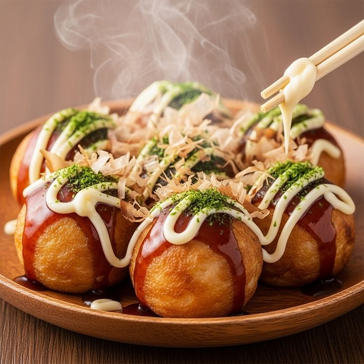
Takoyaki
Bahan:
- 150 gram tepung terigu
- 2 butir telur
- 300 ml kaldu dashi
- 100 gram gurita rebus potong
- Daun bawang
- Acar jahe
- Saus takoyaki & mayones
- Bonito flakes
Langkah:
- Buat adonan dari tepung, telur, kaldu.
- Panaskan cetakan takoyaki, oles minyak.
- Tuang adonan, masukkan gurita, daun bawang, jahe.
- Balik bola-bola hingga matang merata.
- Sajikan dengan saus, mayones, bonito flakes.